무에서 유를창조하는 시스템.
리틱인더스트리 공개 홈페이지 4개 페이지에서 수집한 색·서체·레이아웃·컴포넌트·모션을 실행 가능한 토큰, React 컴포넌트, 로컬 재구성 페이지, 문서 템플릿으로 정리했습니다. 값은 Wix 테마 변수와 렌더링된 계산 스타일(1440·390px)에서 직접 읽었습니다.
외곽선 삼각형 하나, 워드마크 없음.
로고는 채움 없는 검정 정삼각형입니다. 선 두께는 밑변의 약 1/18. 헤더에는 64×64로만 놓이고 텍스트 로고는 어디에도 쓰지 않습니다. 슬로건 "무에서 유를 창조하는 모션그래픽 프로덕션"이 이름 역할을 합니다.
창조하는
모션그래픽 프로덕션
| 원본 | 크기 | 용도 |
|---|---|---|
| logo-triangle-3000.png (리틱인더스트리_로고디자인) | 3000 × 3000 | 마스터, 투명 배경 |
| logo-triangle-1000.png | 1000 × 1000 | 파비콘 · apple-touch-icon |
| logo-animated-1920x1080.gif | 1920 × 1080 | about 히어로(그려지는 삼각형) |
| og-image-1920x1080.png | 1920 × 1080 (OG 2500 × 1330) | 링크 공유 이미지 |
| logo-triangle.svg · -white.svg | vector | 재구성 벡터본 (polygon 500,245 783,733 217,733 · stroke 32) |
{kind=link}
{kind=link}
{kind=link}
{kind=link}
{kind=link}
{kind=link}
흑백에 앰버 한 점.
바탕은 #ffffff와 #000000이 번갈아 나오고, 검정 위 텍스트는 순백이 아닌 #f3f3f3입니다. 회색 본문 위에 검정 볼드로 강조하는 조판이 기본이고, #eea302 앰버는 페이지당 한 번 CTA에만 씁니다. 현재 페이지 내비는 데스크톱 #ff4040, 모바일 #926402.
사용 팔레트
#ffffff white페이지 바탕 · 검정 위 강조 헤드라인#f3f3f3 gray-100카드 · 검정 위 기본 텍스트 · 입력 테두리 · 내비 호버#e3e3e3 gray-200스크롤 힌트 텍스트 · 괘선#c7c7c7 gray-300테마 예비#8a8a8a gray-500보조 본문 · 내비 구분선#414141 gray-700포트폴리오 흐린 도입부#282626 gray-900about 보조 버튼#000000 black기본 텍스트 · 검정 스트립#eea302 amber-500CTA 필 버튼 · "미준수 0회"#ff4040 red-nav현재 페이지 내비(데스크톱)Wix 테마 램프 (선언됨, 앰버 외 미사용)
규칙
| 상황 | 값 |
|---|---|
| 검정 바탕 위 본문 | #f3f3f3. 헤드라인 한 줄만 #ffffff로 올려 위계를 만든다. |
| 흰 바탕 본문 | #8a8a8a로 깔고 핵심 구절만 #000000 볼드. |
| 앰버 | 페이지당 1회, CTA. 호버 시 #f3f3f3로 빠진다. |
| 내비 호버 | 글자가 #f3f3f3로 0.4s 페이드되어 거의 사라진다. |
| 입력 · 버튼 테두리(검정 위) | 2px solid #f3f3f3. 밑줄 입력 포커스는 box-shadow 0 2px 0 0 #f3f3f3, 제출 호버 시 테두리 #eea302. |
| 예산 슬라이더 | 트랙 rgba(243,243,243,.11) 2px · 썸 22px. |
전체 토큰 (tokens.json → tokens.css)
굵은 고딕, 1.4 행간, 극단적 크기.
Latin 헤드라인 서체는 Work Sans SemiBold이지만 한글 글리프가 없어 한글은 OS 고딕으로 폴백됩니다. 사이트가 직접 업로드한 Noto Sans KR Bold · Black · DemiLight가 히어로·버튼·주석에 명시되어 있고, 내비·라벨은 Avenir LT 35 Light, 테마 본문은 DIN Next Light입니다. 행간은 전 단계 1.4em. 모바일(320 캔버스)은 히어로 34/32px, 제목 31px, 내비 22px로 줄어듭니다.
스케일 (데스크톱 1440 관측값)
무에서 유를
창조해냅니다.
| Wix 변수 | 선언 | Wix 변수 | 선언 |
|---|---|---|---|
| font_0 | 100px/1.4em worksans-semibold | font_6 | 18px/1.4em avenir-lt-w01_85-heavy |
| font_1 | 16px/1.4em din-next-w01-light | font_7 | 22px/1.4em avenir-lt-w01_35-light |
| font_2 | 42px/1.4em worksans-semibold | font_8 | 16px/1.4em avenir-lt-w01_35-light (내비) |
| font_3 | 26px/1.4em worksans-semibold | font_9 | 13px/1.4em avenir-lt-w01_35-light |
| font_4 · 5 | 22 · 18px/1.4em worksans-semibold | font_10 | 12px/1.4em din-next-w01-light |
자간은 기본 0. about 버튼 0.75px, 리치텍스트 인라인 1px / -0.5px. 행간 예외: 홈 리드 31/37.2(1.2), about 장문 1.7, "이제 제출만 하시면…" 44/35(0.8, 의도적 겹침).
풀블리드 영상, 중앙 980 컬럼, 거대한 여백.
텍스트와 내비는 중앙 980px 컬럼에, 히어로 카피는 x=117에서 시작합니다. 영상과 검정 스트립은 1440 전폭, 포트폴리오 갤러리는 좌우 60px 여백의 1320px(타일 651×366, 간격 20). 섹션 사이 세로 여백이 300~1500px로 매우 커서 한 화면에 한 메시지만 읽힙니다. 헤더 76px는 고정되지 않습니다. 모바일 캔버스는 320px, 좌우 여백 20px.
페이지별 섹션 시퀀스 (높이 비례, 데스크톱 px)
홈 9,252
리틱인더스트리 10,753
포트폴리오 8,310
작업 의뢰 6,232
고정 치수
| 요소 | 데스크톱 | 모바일 (320) |
|---|---|---|
| 헤더 / 로고 | 76px · relative / 64 × 64 @ (16, 6) | Wix 모바일 헤더 · 내비 22px |
| 내비 항목 | 3 × 141px · 1px #8a8a8a 구분선 · 선택 #ff4040 | 선택 #926402 |
| 섹션 안쪽 여백 | 텍스트 115/96 · 리드 189/228 · contact 312/246 | 20px 사방 |
| 인라인 영상 · 2단 분할 | 900 × 450 중앙 · 719–721 / 나머지 | 단일 컬럼 · 폭 280 |
| CTA 스트립 · 버튼 | 470px 검정 · 288 × 55 r50 | 동일 비율 |
| 슬라이더 카드 · 갤러리 타일 | ≈780 × 440 r40 · 651 × 366 gap 20 | 321 × 178 · 1열 gap 16 |
| 클라이언트 로고 · 앵커 도트 | 150px 셀 8×4 (1200폭) · 11px 도트 7개, 32 간격, 우측 60 | 2열 · 도트 숨김 |
| 푸터 | 48px · 10px 대문자 | 동일 |
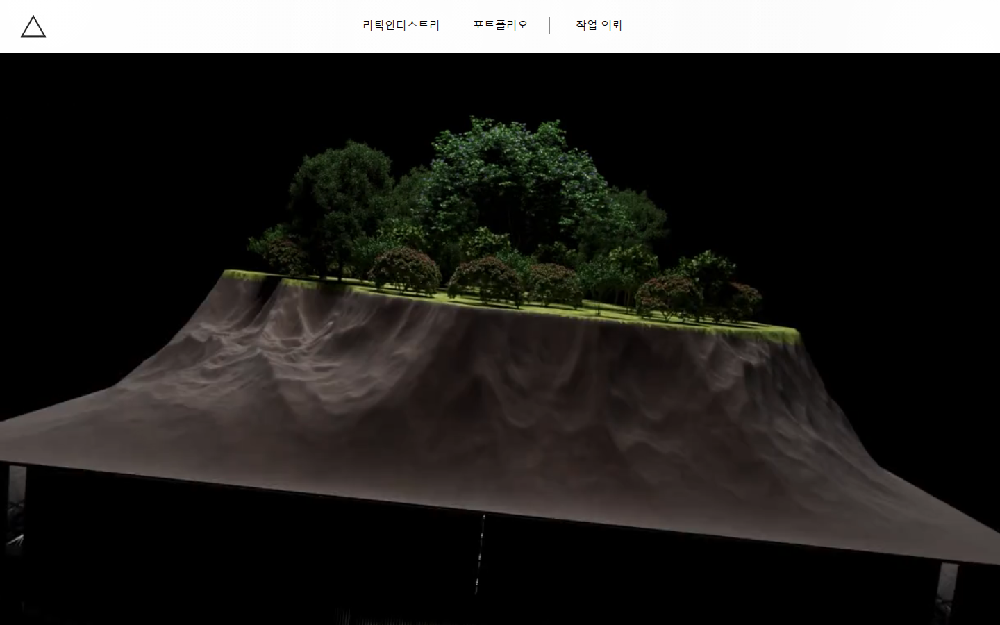
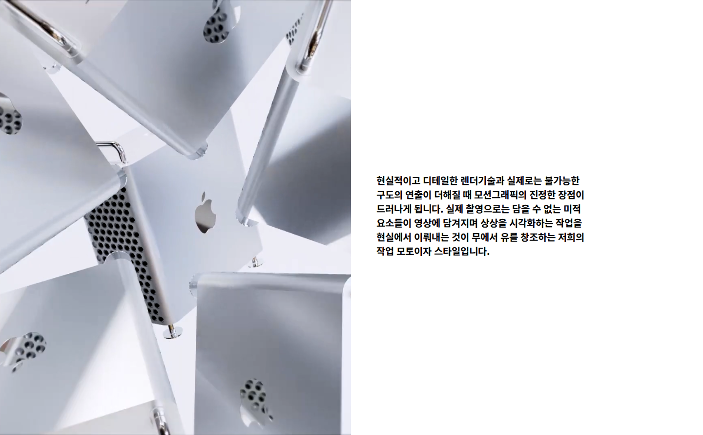
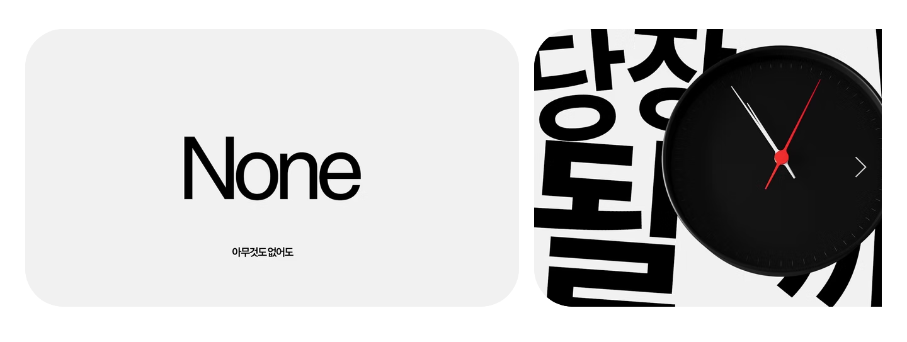
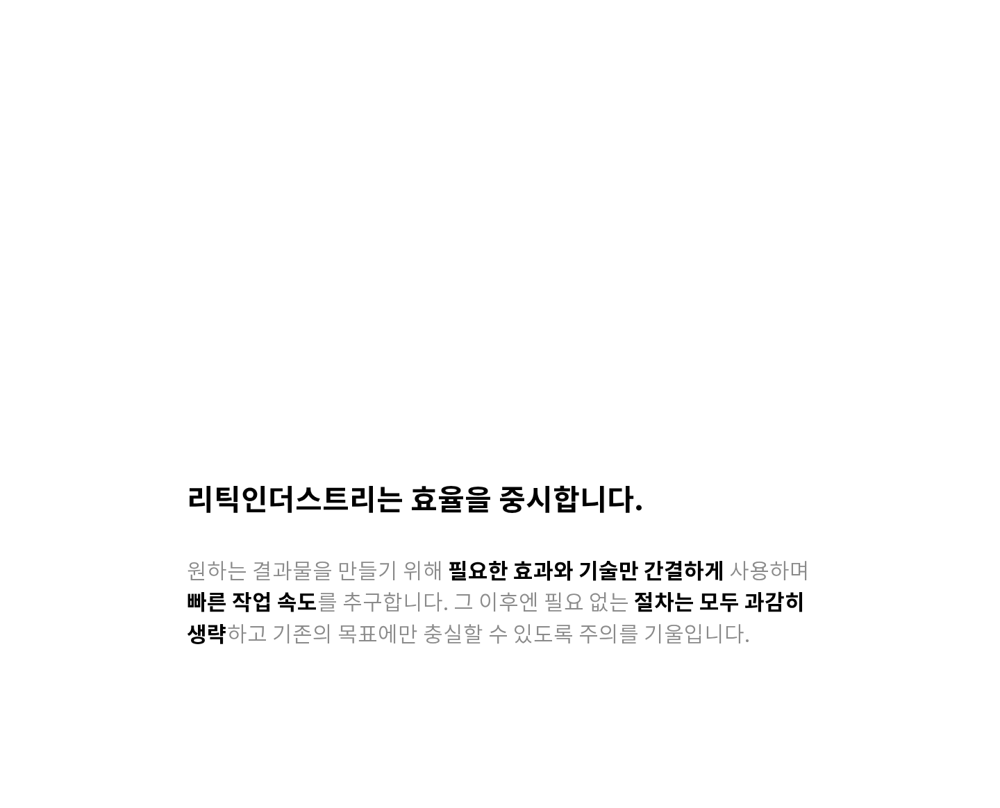
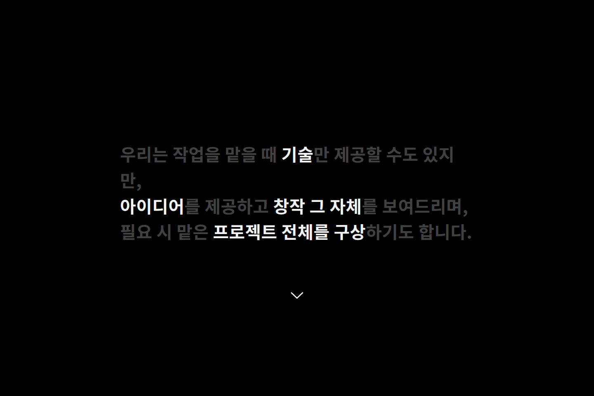
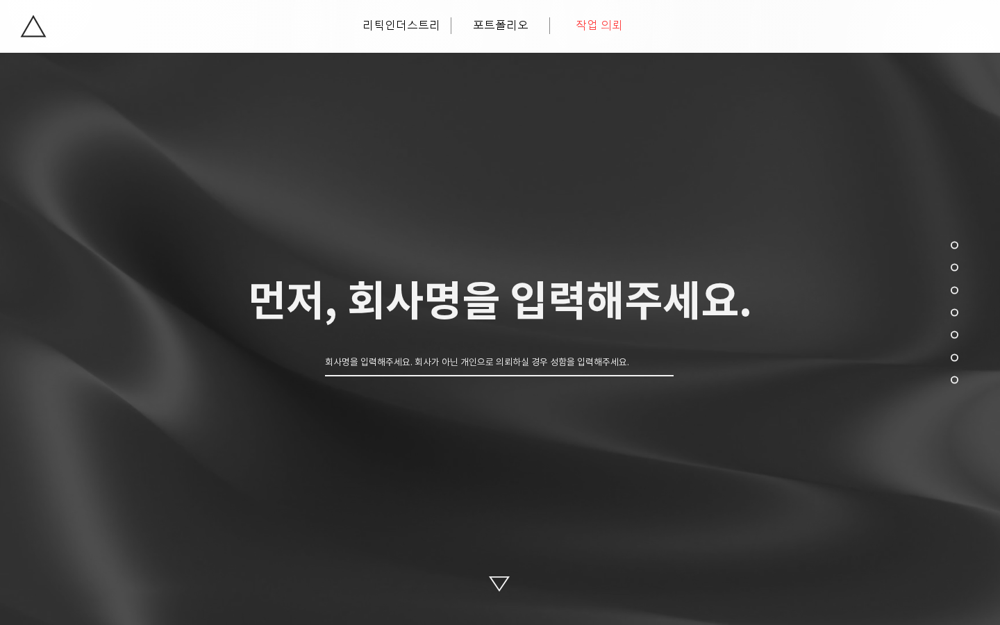
몇 개 안 되지만, 전부 정해져 있다.
아래 샘플은 components.css의 실제 클래스입니다. React 패키지의 Header · NavMenu · Button · TextField · Select · Checkbox · Card · GalleryTile · Gallery · AnchorDots · ScrollHint · CtaStrip · Footer · EnterMotion이 같은 마크업을 출력합니다. 호버·포커스·상태를 직접 확인하세요.
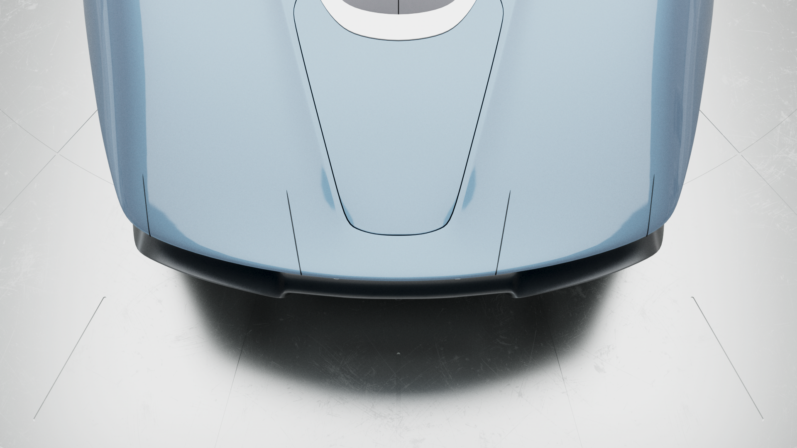
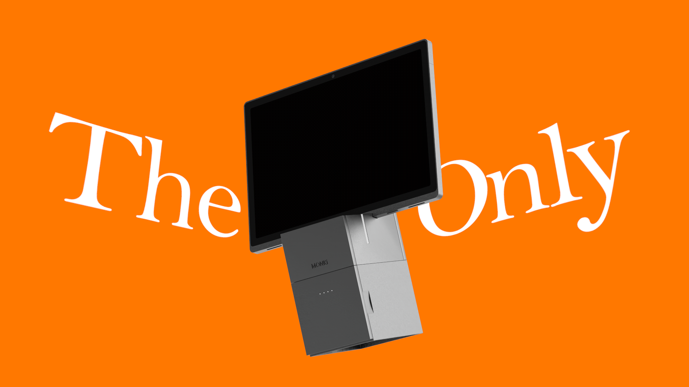
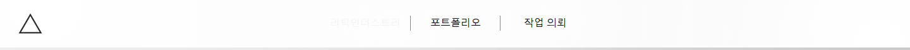
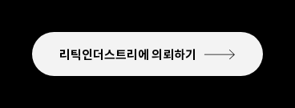
1200ms, sine in-out, 60px.
모든 텍스트는 스크롤 진입 시 재생되는 Wix 진입 애니메이션을 씁니다. 지배적인 값은 1200ms · cubic-bezier(.445,.05,.55,.95) · 60px. 히어로 3줄은 3D 폴드가 0 → 700 → 1400ms로 스태거되고, 홈 힌트와 contact 히어로는 블러로 들어옵니다. 스크롤 패럴랙스는 코드에 있지만 켜져 있지 않습니다. 배경 영상 7개는 자동재생·음소거·루프. 갤러리 컨테이너는 800ms cubic-bezier(.13,.78,.53,.92)로 재배치됩니다.
(.22,1,.36,1) → (.64,0,.78,0)
slide .6s (.83,0,.17,1)
이징 곡선
인터랙션 · 미디어
| 대상 | 트랜지션 |
|---|---|
| 내비 링크 | color .4s ease → #f3f3f3 · 현재 #ff4040 |
| CTA 필 | background #eea302 → #f3f3f3 (.2s) · 화살표 아이콘 |
| 보조 버튼 | all .2s ease-in · #282626 → #f3f3f3 + 1px #000 |
| 제출 | background-color .5s → rgba(243,243,243,.29) · border → #eea302 |
| 갤러리 | container transform .8s (.13,.78,.53,.92) · media transform .4s (.3,.13,.12,1) · filter .5s · opacity .5s · overlay .4s · 로딩 셔머 1.6s |
| 슬라이더 | transform var(--transition-duration) cubic-bezier(.87,0,.13,1) |
| 배경 영상 | 7개 · autoplay muted loop · object-fit cover · 1920×800 / 2000×1000 / 1920×1080 · contact는 position:fixed |
| 스크롤 효과 | parallax / reveal / zoom 선언만 존재, 활성화 안 됨 |
같은 언어로 쓰는 문서.
templates/reatic-document.html 한 파일이 문서용 디자인 시스템입니다. 홈페이지의 조판 규칙을 A4 제안서·보고서·견적서에 맞게 축소한 토큰(표지 44 / 장 28 / 절 20 / 본문 11.5pt / 각주 8.5pt), 표·카드·콜아웃·핵심 숫자·단계·타임라인·서명선 패턴, 그리고 인쇄 스타일이 들어 있습니다. 브라우저에서 열고 내용을 바꾼 뒤 Ctrl/Cmd+P로 PDF를 만듭니다.
수집한 것 전부.
원본 HTML 5종, 계산 스타일·측정 JSON 3종, 스크린샷 67장, 이미지 74장, 웹폰트 55종, 배경 영상 7개(720p)가 evidence/와 app/public/에 있습니다. 파일마다 크기와 SHA-256이 evidence/source-index.json에 기록됩니다.
loading…
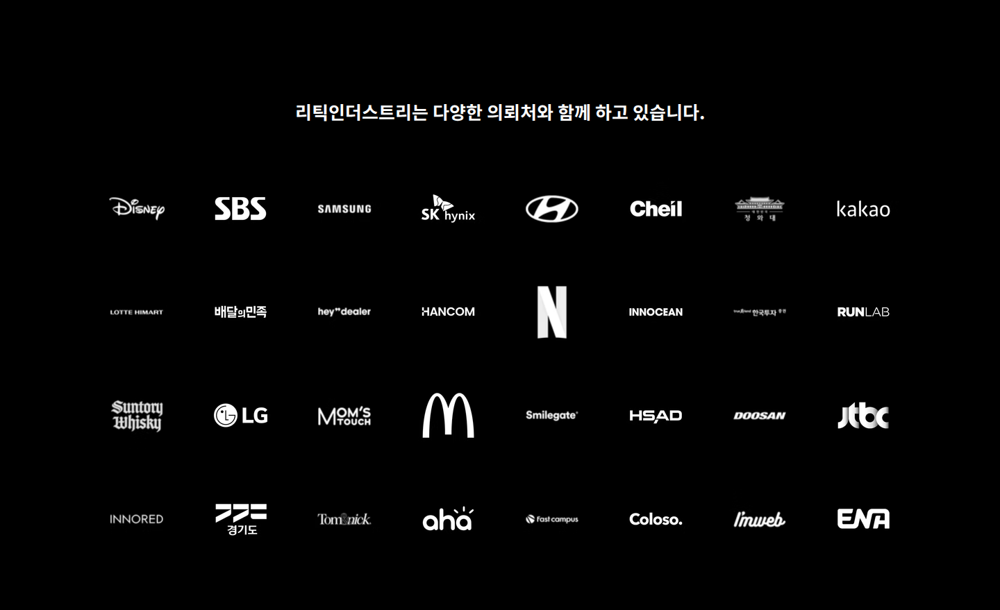
외부 참조
| 항목 | 값 |
|---|---|
| 원본 | reaticindustry.com · /about · /portfolio · /contact (Wix Thunderbolt, 2026-09-13 KST 수집) |
| 포트폴리오 YouTube | kEO_wwGfvIk · 5Yuh3pgZRLo · EDNPR6wQW8Q · BYwRKN0En-w · TN8UvCXm8gA |
| 연락 | contact@reaticindustry.com |
| Wix 유료 폰트 | Avenir LT 35 Light / 85 Heavy, DIN Next Light, Helvetica W01, Proxima Nova — 재배포 불가, 토큰에 Google Fonts 폴백(Nunito Sans, Barlow) 지정 |